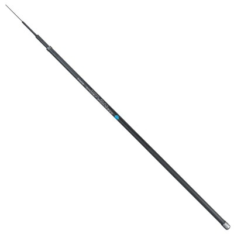
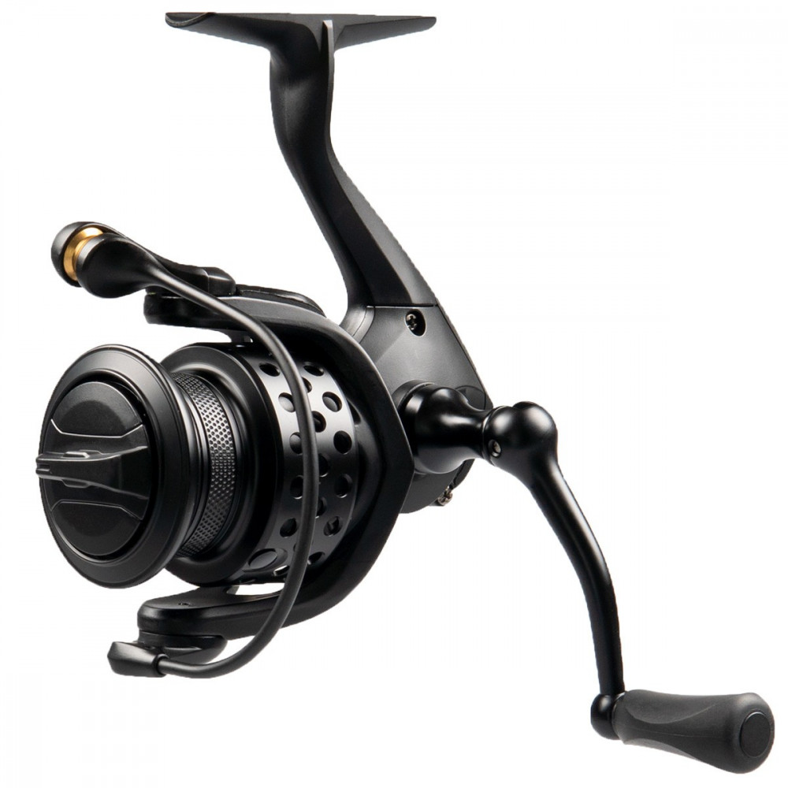
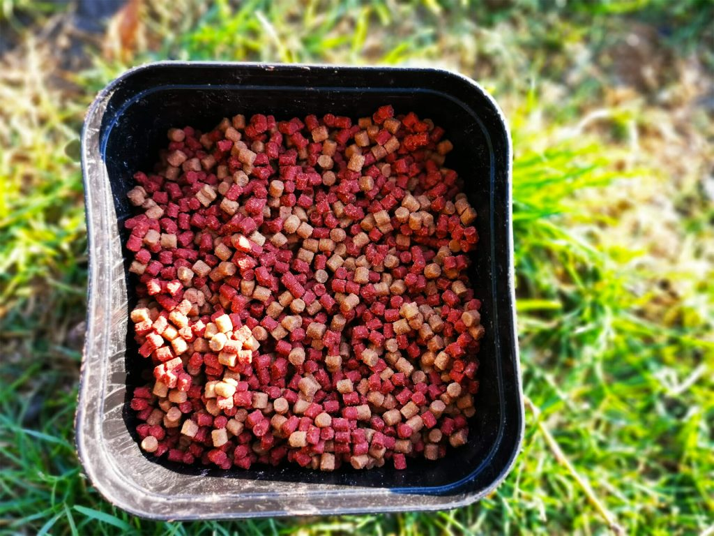

Pescuitul este o activitate practicată de oameni de foarte mult timp, atât pentru procurarea hranei, cât și ca hobby sau sport. Pentru a pescui eficient, pescarii folosesc diferite articole și echipamente special concepute.
Undița este unul dintre cele mai importante articole de pescuit. Aceasta este formată dintr-o tijă lungă, flexibilă, care ajută pescarul să arunce firul în apă și să controleze captura. Undițele pot fi realizate din materiale precum fibră de sticlă sau carbon, fiind ușoare și rezistente.

Mulineta este dispozitivul atașat undiței care permite înfășurarea și desfășurarea firului de pescuit. Ea ajută pescarul să arunce mai departe momeala și să recupereze firul atunci când un pește mușcă.

Firul de pescuit face legătura între undiță și cârlig. Acesta trebuie să fie rezistent pentru a suporta greutatea peștilor. Există mai multe tipuri de fire, cum ar fi monofilamentul, firul textil sau fluorocarbonul.
.png)
Cârligul este piesa metalică la care se prinde momeala și care permite prinderea peștelui. Cârligele au diferite dimensiuni și forme, în funcție de tipul de pește care se dorește a fi prins.
.png)
Momelile sunt folosite pentru a atrage peștii. Acestea pot fi naturale, cum ar fi râmele, viermii sau porumbul, sau artificiale, realizate din plastic sau metal și concepute să imite mișcarea prăzii.

Pe lângă echipamentele principale, pescarii utilizează și diverse accesorii:
Aceste accesorii contribuie la eficiența și organizarea activității de pescuit.